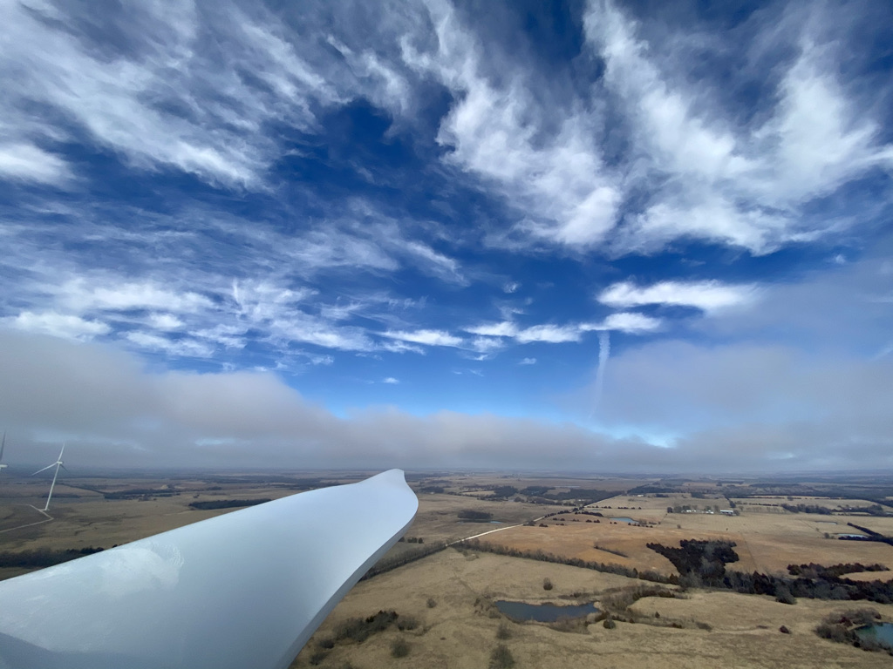
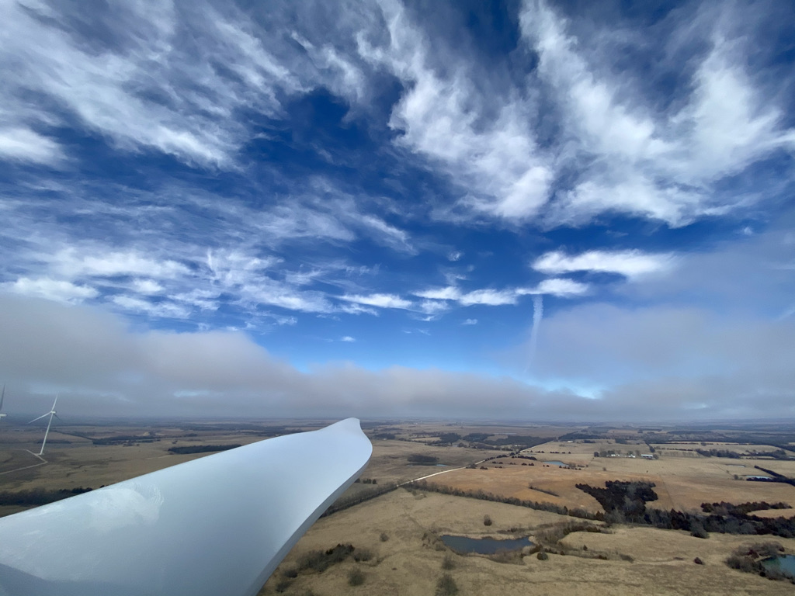

✧ About Me ✧
Hello!! My name is Sarei Aldaba and I've always enjoyed the art of
photagraphy. Being able to capture a moment and look at is forever
is
✧ About this website ✧
These photographs are inspired by life expiriences. Sit back ,
relax, and take a deep breath. Take your time are really let
yourself travel in time.


 
